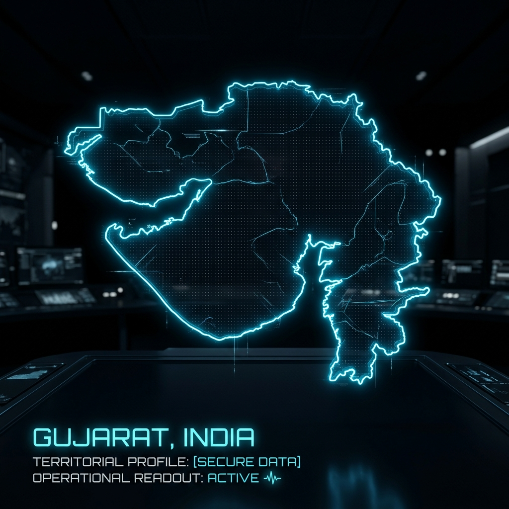

Live Platform Usage, Screens & Submission Media Hub
Yeh tool specially aapki live website https://shakyavinit.github.io/sentrax/ ko pura use karke dikhata hai. Yahan se aap website ke har module (Overview, Live Matrix, Tactical Grid, Journey Replay, Patrol Route, Alerts, Evidence) ke updated screenshots aur complete automated video demo bina kisi manual recording ke 1-click me export kar sakte hain.
https://shakyavinit.github.io/sentrax/
HOW TO USE SENTRAX // STEP-BY-STEP OPERATIONAL FLOW
Click any step below to preview the exact screen and learn how law enforcement operators use that module.

Command Center Overview & Statewide Telemetry
Yahan officer Gujarat Police municipal CCTV cameras ka statewide health status, active Sentinel nodes, live ANPR detection rate, aur recent vehicle sightings feed ek single command dashboard me monitor karta hai.
- Real-time vehicle detection counters (120+ sightings/hr)
- Congestion indicator for MG Road & SG Highway
- Clickable target shortcut to trigger instant vehicle dossier
OFFICIAL WEBSITE SCREENSHOTS & ASSET VAULT ALL PLATFORM MODULES
High-resolution screenshots and video proofs of each page on https://shakyavinit.github.io/sentrax/ ready for hackathon presentation submission.